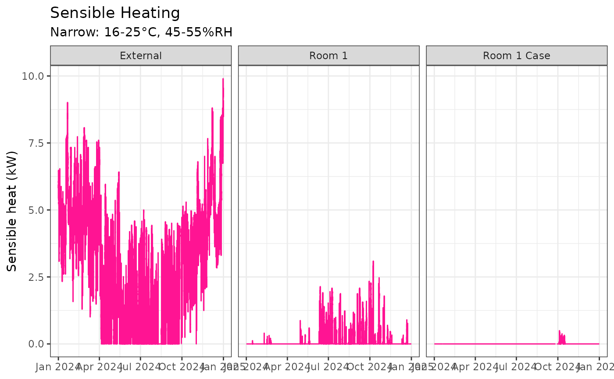
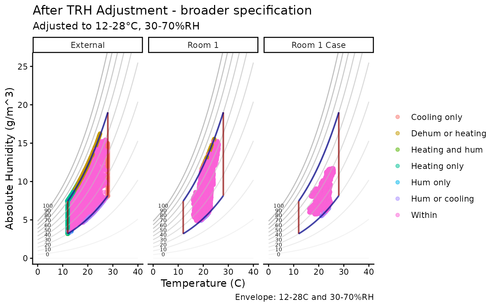

Cultural heritage organisations can reduce energy consumption by for example broadening specifications that are used to manage risks to the collections.
An example assessment of a space of theoretical reduction of energy by broadening specifications from 16-25°C and 45-55%rh to 12-28°C and 30-70%rh. The increase/decrease of risks is also assessed using the Conservation tools available in the package.
Datasets
mydata
This dataset contains environmental monitoring data collected from example heritage sites.
It includes measurements of temperature (°C) and relative humidity (%) recorded by sensors over time.
| Variable | Description |
|---|---|
| Site | “London” |
| Sensor | “External”, “Room 1”, “Room 1 Case” |
| Date | Timestamp of the measurement (POSIXct format) |
| Temp | Air temperature in degrees Celsius (°C) |
| RH | Relative humidity as percentage (0-100%) |
Example usage to load the dataset from the package:
filepath <- data_file_path("mydata.xlsx")
mydata <- readxl::read_excel(filepath, sheet = "mydata")
head(mydata)
#> # A tibble: 6 × 5
#> Site Sensor Date Temp RH
#> <chr> <chr> <dttm> <dbl> <dbl>
#> 1 London Room 1 2024-01-01 00:00:00 21.8 36.8
#> 2 London Room 1 2024-01-01 00:15:00 21.8 36.7
#> 3 London Room 1 2024-01-01 00:29:59 21.8 36.6
#> 4 London Room 1 2024-01-01 00:44:59 21.7 36.6
#> 5 London Room 1 2024-01-01 00:59:59 21.7 36.5
#> 6 London Room 1 2024-01-01 01:14:59 21.7 36.2
mydata |> graph_TRH() + theme_bw() + labs(title = "mydata") + facet_grid(~Sensor)
Sustainability
Use the add_humidity_adjustments function to calculate
how to adjust the humidity in each space using the humidity
funcitons.
The add_humidity_adjustments function applies humidity
adjustment calculations based on user-defined specifications for
temperature and RH. Adjusted variables like newTemp_TRHadj and
newRH_TRHadj are the new temperature and humidity values following
heating, cooling, humidification and dehumidification. An energy
estimate is provided for temperature adjustement (heating and coooling).
Adjustment of humdity by humidification and dehumidification is being
developed.
mydata_adj <-
mydata |>
group_by(Sensor) |>
add_humidity_adjustments(LowT = 16, HighT = 25, LowRH = 45, HighRH = 55) |>
mutate(
SensibleHeating = calcSensibleHeating(Temp, newTemp_TRHadj, RH, volumeFlowRate = 0.5),
CoolingPower = calcCoolingPower(Temp, newTemp_TRHadj, RH, newRH_TRHadj, volumeFlowRate = 0.5)
)
glimpse(mydata_adj)
#> Rows: 105,408
#> Columns: 38
#> Groups: Sensor [3]
#> $ Site <chr> "London", "London", "London", "London", "London", "Lon…
#> $ Sensor <chr> "Room 1", "Room 1", "Room 1", "Room 1", "Room 1", "Roo…
#> $ Date <dttm> 2024-01-01 00:00:00, 2024-01-01 00:15:00, 2024-01-01 …
#> $ Temp <dbl> 21.8, 21.8, 21.8, 21.7, 21.7, 21.7, 21.7, 21.7, 21.7, …
#> $ RH <dbl> 36.8, 36.7, 36.6, 36.6, 36.5, 36.2, 36.3, 36.4, 36.0, …
#> $ AH <dbl> 7.052415, 7.033251, 7.014087, 6.973723, 6.954670, 6.89…
#> $ DP <dbl> 6.383970, 6.344456, 6.304848, 6.216205, 6.176529, 6.05…
#> $ TRH_within <lgl> FALSE, FALSE, FALSE, FALSE, FALSE, FALSE, FALSE, FALSE…
#> $ T_lower <lgl> FALSE, FALSE, FALSE, FALSE, FALSE, FALSE, FALSE, FALSE…
#> $ T_higher <lgl> FALSE, FALSE, FALSE, FALSE, FALSE, FALSE, FALSE, FALSE…
#> $ RH_lower <lgl> TRUE, TRUE, TRUE, TRUE, TRUE, TRUE, TRUE, TRUE, TRUE, …
#> $ RH_higher <lgl> FALSE, FALSE, FALSE, FALSE, FALSE, FALSE, FALSE, FALSE…
#> $ zone <chr> "Hum or cooling", "Hum or cooling", "Hum or cooling", …
#> $ TRH_zone <chr> "Dry", "Dry", "Dry", "Dry", "Dry", "Dry", "Dry", "Dry"…
#> $ T_zone <chr> "Within", "Within", "Within", "Within", "Within", "Wit…
#> $ RH_zone <chr> "Dry", "Dry", "Dry", "Dry", "Dry", "Dry", "Dry", "Dry"…
#> $ dTemp <dbl> 0, 0, 0, 0, 0, 0, 0, 0, 0, 0, 0, 0, 0, 0, 0, 0, 0, 0, …
#> $ dRH <dbl> -8.2, -8.3, -8.4, -8.4, -8.5, -8.8, -8.7, -8.6, -9.0, …
#> $ newTemp_TRHadj <dbl> 21.8, 21.8, 21.8, 21.7, 21.7, 21.7, 21.7, 21.7, 21.7, …
#> $ newAH_TRHadj <dbl> 8.623877, 8.623877, 8.623877, 8.574250, 8.574250, 8.57…
#> $ dTemp_TRHadj <dbl> 0, 0, 0, 0, 0, 0, 0, 0, 0, 0, 0, 0, 0, 0, 0, 0, 0, 0, …
#> $ dAH_TRHadj <dbl> 1.571462, 1.590626, 1.609790, 1.600527, 1.619581, 1.67…
#> $ newRH_TRHadj <dbl> 45, 45, 45, 45, 45, 45, 45, 45, 45, 45, 45, 45, 45, 45…
#> $ dRH_TRHadj <dbl> 8.2, 8.3, 8.4, 8.4, 8.5, 8.8, 8.7, 8.6, 9.0, 9.0, 9.2,…
#> $ newAH_AHadj <dbl> 8.623877, 8.623877, 8.623877, 8.574250, 8.574250, 8.57…
#> $ dAH_AHadj <dbl> 1.571462, 1.590626, 1.609790, 1.600527, 1.619581, 1.67…
#> $ newRH_AHadj <dbl> 45, 45, 45, 45, 45, 45, 45, 45, 45, 45, 45, 45, 45, 45…
#> $ dRH_AHadj <dbl> 8.2, 8.3, 8.4, 8.4, 8.5, 8.8, 8.7, 8.6, 9.0, 9.0, 9.2,…
#> $ newTemp_AHadj <dbl> 21.8, 21.8, 21.8, 21.7, 21.7, 21.7, 21.7, 21.7, 21.7, …
#> $ dTemp_AHadj <dbl> 0, 0, 0, 0, 0, 0, 0, 0, 0, 0, 0, 0, 0, 0, 0, 0, 0, 0, …
#> $ newTemp_Tadj <dbl> 18.54655, 18.50309, 18.45953, 18.36203, 18.31840, 18.1…
#> $ dTemp_Tadj <dbl> -3.253447, -3.296908, -3.340472, -3.337966, -3.381603,…
#> $ newRH_Tadj <dbl> 44.50688, 44.50032, 44.49374, 44.49407, 44.48749, 44.4…
#> $ dRH_Tadj <dbl> 7.706876, 7.800316, 7.893740, 7.894074, 7.987487, 8.26…
#> $ newAH_Tadj <dbl> 5.831209, 5.800415, 5.769701, 5.736456, 5.705996, 5.61…
#> $ dAH_Tadj <dbl> -1.221207, -1.232836, -1.244386, -1.237268, -1.248673,…
#> $ SensibleHeating <dbl> 0, 0, 0, 0, 0, 0, 0, 0, 0, 0, 0, 0, 0, 0, 0, 0, 0, 0, …
#> $ CoolingPower <dbl> 0, 0, 0, 0, 0, 0, 0, 0, 0, 0, 0, 0, 0, 0, 0, 0, 0, 0, …Adjustment before and after applying calculations in the
add_humidity_adjustments function.
graph_psychrometric(mydata_adj, y_func = calcAH, data_col = "TRH_zone",
LowT = 16, HighT = 25, LowRH = 45, HighRH = 55) +
facet_wrap(~Sensor) +
labs(title = "Before TRH Adjustment", subtitle = "mydata", col = "") +
theme_classic()
mydata_adj |>
graph_psychrometric(Temp = "newTemp_TRHadj", RH = "newRH_TRHadj",
y_func = calcAH, data_col = "zone",
LowT = 16, HighT = 25, LowRH = 45, HighRH = 55) +
labs(title = "After TRH Adjustment - narrow specification",
subtitle = "Adjusted to 16-25°C and 45-55%RH",
col = "") +
facet_grid(~Sensor) +
theme_classic()
Energy Implications
The calculations of sensible heating and cooling power estimate the energy required to condition heritage spaces to specified humidity and temperature levels.
# Plot the temperature changes required to achieve target conditions
mydata_adj |>
ggplot() +
geom_line(aes(Date, dTemp_TRHadj), col = "firebrick", alpha = 0.8) +
geom_smooth(aes(Date, dTemp_TRHadj)) +
labs(title = "Temperature change required to achieve Narrow TRH specification",
subtitle = "Positive values indicate increasing the temperature",
x = NULL, y = "Temperature (°C)") +
facet_grid(~Sensor) +
theme_bw()
mydata_adj |>
ggplot() +
geom_line(aes(Date, SensibleHeating), col = "deeppink") +
labs(x = NULL, y = "Sensible heat (kW)",
title = "Sensible Heating", subtitle = "Narrow: 16-25°C, 45-55%RH") +
facet_grid(~Sensor) +
theme_bw()
mydata_adj |>
ggplot() +
geom_line(aes(Date, CoolingPower), col = "dodgerblue") +
labs(x = NULL, y = "Cooling power (kW)",
title = "Cooling Power", subtitle = "Narrow: 16-25°C, 45-55%RH") +
facet_grid(~Sensor) +
theme_bw()Comparing Environmental Specifications
Using broader or narrower environmental control specifications impacts both energy consumption and heritage risks.
- Narrow specification: 16-25°C and 45-55%rh
- Broader specification: 12-28°C and 30-70%rh
mydata_adj2 <-
mydata |>
group_by(Sensor) |>
add_humidity_adjustments(LowT = 12, HighT = 28, LowRH = 30, HighRH = 70) |>
mutate(
SensibleHeating = calcSensibleHeating(Temp, newTemp_TRHadj, RH, volumeFlowRate = 0.5),
CoolingPower = calcCoolingPower(Temp, newTemp_TRHadj, RH, newRH_TRHadj, volumeFlowRate = 0.5)
)
mydata_adj2 |>
graph_psychrometric(Temp = "newTemp_TRHadj", RH = "newRH_TRHadj",
y_func = calcAH, data_col = "zone",
LowT = 12, HighT = 28, LowRH = 30, HighRH = 70) +
labs(title = "After TRH Adjustment - broader specification",
subtitle = "Adjusted to 12-28°C, 30-70%RH",
col = "") +
facet_grid(~Sensor) +
theme_classic()
mydata_adj2 |>
ggplot() +
geom_line(aes(Date, SensibleHeating), col = "deeppink") +
labs(x = NULL, y = "Sensible heat (kW)",
title = "Sensible Heating - broader specification", subtitle = "Adjusted to 12-28°C, 30-70%RH") +
facet_grid(~Sensor) +
theme_bw()
mydata_adj2 |>
ggplot() +
geom_line(aes(Date, CoolingPower), col = "dodgerblue") +
labs(x = NULL, y = "Cooling power (kW)",
title = "Cooling Power - broader specification", subtitle = "Adjusted to 12-28°C, 30-70%RH") +
facet_grid(~Sensor) +
theme_bw()Combine datasets for comparison and add conservation risk metrics.
mydata_no_adj <-
mydata |>
# Doing nothing costs no energy
mutate(
SensibleHeating = 0, CoolingPower = 0
) |>
add_conservation_calcs()
mydata_adj <-
mydata_adj |>
add_conservation_calcs(Temp = "newTemp_TRHadj", RH = "newRH_TRHadj")
mydata_adj2 <-
mydata_adj2 |>
add_conservation_calcs(Temp = "newTemp_TRHadj", RH = "newRH_TRHadj")
mydata_bind <-
bind_rows(
mydata_no_adj |> mutate(Specification = "1) Do Nothing"),
mydata_adj |> mutate(Specification = "2) Narrow Specs"),
mydata_adj2 |> mutate(Specification = "3) Broader Specs")) Comparison of the risks and energy savings made by making the specification broader.
mydata_bind |>
ggplot() +
geom_col(aes(fct_rev(Specification), CoolingPower), fill = "dodgerblue3") +
coord_flip() +
facet_grid(Sensor ~ .) +
labs(title = "Cooling required to adjust TRH", subtitle = "Narrow vs Broader specifications",
x = NULL, y = "Sum of energy required (kW)") +
theme_classic()
mydata_bind |>
ggplot() +
geom_col(aes(fct_rev(Specification), SensibleHeating), fill = "deeppink3") +
coord_flip() +
facet_grid(Sensor ~ .) +
labs(title = "Heating required to adjust TRH", subtitle = "Narrow vs Broader specifications",
x = NULL, y = "Sum of energy required (kW)") +
theme_classic()Heritage Risk Indicators
Summary metrics such as lifetime multiplier, preservation index, equilibrium moisture content (EMC) of wood, and mould risk indices provide a quantitative assessment of heritage risk under different environmental control strategies.
- Lifetime multiplier - compared to 20°C and 50%rh, values >1 are conditions prolong lifetime.
- Preservation index - years to deterioration, higher values are more favorable.
- Equilibrium moisture content wood between 6-20% - time spent within safer range (1 = 100%).
- Mould growth risk - lower values are better.
mydata_summary <-
mydata_bind |>
group_by(Sensor, Specification) |>
summarise(
Lifetime = mean(Lifetime, na.rm = TRUE),
PreservationIndex = mean(PreservationIndex, na.rm = TRUE),
EMC_wood = mean(EMC_wood >= 6 & EMC_wood <= 20, na.rm = TRUE),
Mould_LIM = sum(RH > Mould_LIM, na.rm = TRUE),
Mould_index = sum(Mould_index, na.rm = TRUE)
)
mydata_summary
#> # A tibble: 9 × 7
#> # Groups: Sensor [3]
#> Sensor Specification Lifetime PreservationIndex EMC_wood Mould_LIM Mould_index
#> <chr> <chr> <dbl> <dbl> <dbl> <int> <dbl>
#> 1 Exter… 1) Do Nothing 0.912 89.5 0.935 8497 141.
#> 2 Exter… 2) Narrow Sp… 0.993 54.7 1 13122 0.953
#> 3 Exter… 3) Broader S… 0.952 72.5 1.000 11226 17.5
#> 4 Room 1 1) Do Nothing 1.04 43.7 0.978 4 0.502
#> 5 Room 1 2) Narrow Sp… 1.01 39.3 1 6 0.157
#> 6 Room 1 3) Broader S… 1.04 43.5 1 6 0.465
#> 7 Room … 1) Do Nothing 1.07 42.1 0.971 0 0.140
#> 8 Room … 2) Narrow Sp… 1.02 37.3 1 0 0.135
#> 9 Room … 3) Broader S… 1.06 42.0 1 0 0.140- The “Do Nothing” specification shows baseline risk levels and zero energy consumption. Mould risk are present but relatively high preservation indicators (ironically outdoors).
- The “Narrow Specifications” target tighter environmental ranges (e.g., 16-25°C and 45-55% RH). This tends to a slightly lower lifetime and preservation indices indoors than doing nothing. The risk of mould risk indoors decreases but there remains the question of the significance. Energy consumption is greater than “Do Nothing” and “Broader” specification.
- The “Broader Specifications” with a wider acceptable temperature and humidity range (e.g., 12-28°C and 30-70% RH) typically maintain similar lifetime multipliers and preservation indices as narrow ranges indoors. There is no energy consumption with no heating or cooling required indoors, however humidification/dehumidification are not considered (being developed). Mould risk remains similar to “Do Nothing”.
Limitations: Research required
Other conservation risk metrics not considered. For example, the stress-strain behavior of materials which are more relevant to the collections housed in a space.
Assumed that heating and cooling are 100% efficient and instantaneous. The calculations based on the time-series stamped data are not realistically managed at this rate. Establishing how spaces behave and how fast and efficiently heating/cooling systems introduce heat and cooling into a space needs to be established. Humidification and dehumification energy consumption models also need to be developed.
Spaces are not typically conditioned directly from physical calculations and other factors are needed to understand the energy consumption (e.g. off-coil chiller dew point, chilled water temperature, etc.).